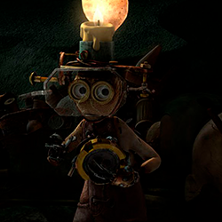
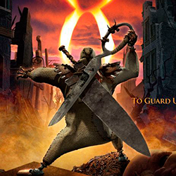
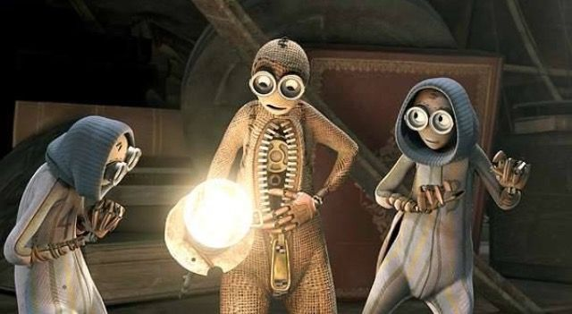
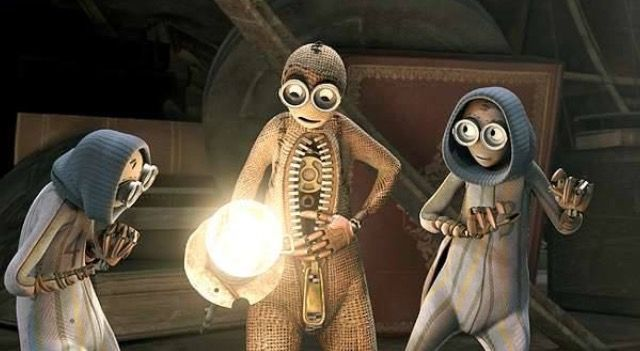

Numero 9

El protagonista de nuestra historia, este fue el ultimo muñeco en ser creado el cual trae un espiritu aventurero al grupo y la perspicacia para preguntarse quian a hecho esto y encontrarlo hara dar justicia, al principio lo ven como un loco muchos mueren por su culpa pero al final lo ven como el salvador.

Este es el primer muñeco creado, el se auto considera el lider del resto del grupo, tiene como secuaz al numero 8, el piensa que es mejor permanecer escondidos en una iglesia.
Numero 5
Un personaje miedoso que se dedica a visualizar desde lo alto del campanario la ciudad destruida y cartografiarla en un papel con la ayuda de numero 2.
Numero 2
El personaje mas inteligente del grupo, se dedica a crear ingeniosos aparatos y cachibaches con los objetos que encuentra en el yermo, el es el único que sale a explorar.
Numero 8
El fuerte del grupo, este personaje es algo misterioso ya que no habla, es la mano derecha de Numero 1 y el encargado de luchar y defender al grupo.

 
